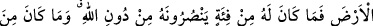

KÂRÛN’U DA,
YERİN DİBİNE GEÇİRDİK
76. Kârûn, Mûsâ’nın kavminden idi de, onlara karşı azgınlık etmişti. Biz ona öyle
hazineler vermiştik ki, anahtarlarını güçlü kuvvetli bir topluluk zor taşırdı. Kavmi
ona şöyle demişti: Şımarma! Bil ki Allah şımarıkları sevmez.
77. Allâh’ın sana verdiğinden (O’nun yolunda harcayarak) ahiret yurdunu iste;
ama dünyadan da nasibini unutma. Allah sana ihsan ettiği gibi, sen de (Allah’ın
kullarına) iyilik et. Yeryüzünde bozgunculuğu arzulama. Şüphesiz ki Allah,
bozguncuları sevmez.
78. Kârûn ise: O (servet) bana ancak kendimdeki bilgi sayesinde verildi, demişti.
Bilmiyor muydu ki Allah, kendinden önceki nesillerden, ondan daha güçlü, ondan
daha çok taraftarı olan kimseleri helâk etmişti. Günahkârlardan günahları
sorulmaz (Allah onların hepsini bilir).
79. Derken, Kârûn, ihtişamı içinde kavminin karşısına çıktı. Dünya hayatını
arzulayanlar: Keşke Kârûn’a verilenin benzeri bizim de olsaydı; doğrusu o çok